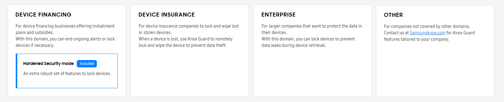
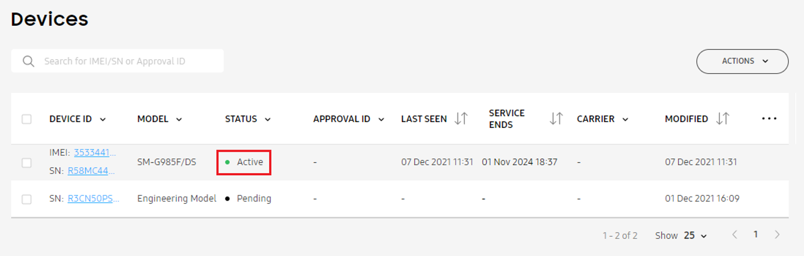
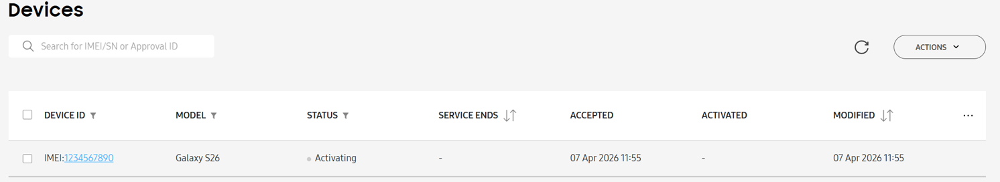

Knox Guard operational guide
Last updated July 9th, 2026
To assist with maintaining stable and efficient business operations, the Knox Guard team has crafted this guide to highlight a few key considerations, strategies for addressing potential issues, and practical recommendations for effective management.
This guide only provides a high-level overview of Knox Guard’s features and capabilities. As the optimal configuration for your business will vary depending on your specific needs, we recommend you work with a Samsung representative to determine the features that best fit your specific use case.
Before enabling Knox Guard for your business
Before Knox Guard activates on a device, control over the device can’t be guaranteed. For applications in logistics, transportation, or online sales sectors, Knox Guard is unable to prevent tampering until the device connects to a network.
Select an appropriate tenant domain
Knox Guard customers are organized into tenant domains (also simply referred to as domains) based on their use case. Currently, there are four domains available in Knox Guard: Device Financing, Device Insurance, Enterprise, and Other.

Domains provide an organized and secure way to enable specialized permissions, and allow us to recommend optimal features for your business operations. Each domain is defined by its mandatory, optional, and recommended features, tailored to its specific use case.

When signing up for Knox Guard, select the domain that best aligns with your business requirements. Existing customers are also recommended to select a domain. For more information, see Tenant domains.
You can only select a domain once. Once your selection is confirmed, it cannot be changed. As such, we strongly recommend you read the admin guide and consider the features and restrictions included in each domain before you make your selection.
Configure enrollment messages and custom Terms and Conditions
Although Knox Guard provides the capability to lock devices, responsibility for device control and service operations lie with the customer, as defined in the Knox Guard Terms and Conditions.
As such, we strongly encourage you to configure appropriate notices and agreements in the Enrollment management policy so device users are informed about the restrictions that may apply to their device.
Recommended settings:
- Enrollment screen (available only for the Device Financing domain)
- Enrollment notices
- Custom Terms and Conditions
Key guidance
When configuring enrollment notices or terms and conditions, clearly inform device users that:
- Device controls, such as locking or unlocking the device, may be enforced.
- Software updates may be applied to the device. This can also include installing specific apps.
- Unauthorized actions, such as hacking or tampering with the device, are strictly prohibited.
You should also include disclaimers stating that the service provider is not liable for any issues with device access that occur as a result of policy violations.
When selling devices or subscription services
If you’re a business that sells devices or subscriptions, it’s critical to confirm that Knox Guard is successfully activated on your devices while under supervision of your business. This is especially important for businesses with installment-based sales models.
To help reduce financial risks, we advise you verify your devices are secured prior to distribution. Without successfully activating Knox Guard, we cannot guarantee the device can be locked or controlled at a future point in time.
Verify Knox Guard activation
Prior to distributing devices, verify that they are active in Knox Guard. You can do this in the Knox Guard console, or through REST APIs.
On the Knox Guard console
Navigate to the Devices page. In the STATUS column of the device table, an activated device will display as Active.

Using REST APIs
You can verify the status of a device using both the Knox Guard and Knox Webhook Notification APIs.
- Knox Webhook Notification: Using the Create subscription endpoint, register the
KG_DEVICE_ENROLLEDevent to send a change notification to your callback URL whenever Knox Guard successfully activates on a device. For more information, see the Knox Webhook Notification developer guide. - Knox Guard: You can retrieve the status of a device using the Get device info endpoint. Knox Guard activated devices return a status of
Enrolled.
If you can’t immediately verify Knox Guard activation
If you’re unable to verify the device is secured with Knox Guard at the point of sale, we recommend you still take steps to ensure the device is registered on the server and Knox Guard is ready to activate on the device upon connecting to a network.
On the Knox Guard console
Navigate to the Devices page. In the STATUS column of the device table, a device that’s prepped for activation will display as Activating.

Using REST APIs
You can verify the status of a device using both the Knox Guard and Knox Webhook Notification APIs.
-
Knox Webhook Notification: Currently, Knox Webhook Notification can’t directly check whether a device is in the Activating status. The Samsung Knox team is aware of this limitation and have scheduled improvements for an upcoming release.
Although you can’t directly check for the Activating status, you can still use the Create subscription endpoint to register the
KG_DEVICE_ENROLLEDevent. This sends a change notification to your callback URL when Knox Guard successfully activates on the device.For more information, see the Knox Webhook Notification developer guide.
-
Knox Guard: You can retrieve the status of a device using the Get device info endpoint. Devices ready to activate Knox Guard return a status of
Accepted.
During Knox Guard operations
For smooth and seamless business operations, consider the following operational recommendations.
Customize appropriate lock messages
Knox Guard offers a variety of different locking mechanisms, each serving a different purpose. When configuring locking policies, ensure you provide clear and relevant messaging to customers on the lock screen.
Admin initiated lock
When using the Lock device action to remotely lock a device, enter a message clearly stating:
- Why the device was locked.
- Action(s) device users must take to unlock the device.
A sample message is as follows1:
Your device has been locked by [Company Name] as a result of outstanding payments. To unlock your phone, please make a payment using the [payment app] on your device’s lockscreen.
Admin-initiated locks also block device users from accessing the camera. You may want to consider this limitation when implementing your payment app for Knox Guard use — device users won’t be able to use camera-based payment features, such as scanning QR codes, while the device is locked.
For more information, see:
| Domain | Admin guide | REST API endpoint |
|---|---|---|
| Any | ||
| Device Financing with PAYG tenant* |
*Pay-as-you-go (PAYG) tenants are a subset of customers in the Device Financing domain with a specific business payment model. As such, different policies are offered for PAYG customers. For more information, see Device Financing tenant types.
Offline device lock
When a user purposely avoids connecting to a network, the device can’t receive policies from the Knox Guard server. To address this, you can use the Offline device lock policy to automatically lock devices that haven’t connected to a network for a given period of time.
Offline device lock isn’t applicable to PAYG tenants. This feature is also automatically enabled and non-configurable if you’ve selected the Device Financing domain.
Your offline lock message should clearly state that a network connection is required to unlock the device. A sample message is as follows1:
Your device has been locked because it’s been offline for too long. To unlock your device, please connect to a Wi-Fi or cellular network.
For more information, see:
| Admin guide | REST API endpoint |
|---|---|
SIM control lock
The SIM control policy allows you to configure a default group of settings that restrict SIM functionality or lock devices with unlisted SIM cards or eSIMs.
Ensure your locked device message clearly states that device usage is limited to approved SIMs only. A sample message is as follows1:
Your SIM can’t be detected or is from a service provider that isn’t supported. To unlock your device, try a different SIM or contact us for more information.
This also applies when applying restrictions to devices with unlisted MCC/MNCs. Your restricted action notification should clearly state why restrictions were applied, and what action(s) device users can take to remove these limitations.
For more information, see:
| Admin guide | REST API endpoint |
|---|---|
Recommended actions for installment-based financing businesses
For installment-based financing businesses, additional operational and technical controls are recommended to further enhance device security.
Once Knox Guard successfully activates on the device, we recommend you perform regular software updates to ensure devices are running the latest available firmware version.
To help keep your devices updated with the latest firmware, you can enable the following policies:
- Firmware update reminder: Send customized firmware update reminders to device users.
- Firmware auto-download over Wi-Fi: Forces devices to automatically download the latest firmware version when they connect to Wi-Fi.
Ending Knox Guard service
Once Knox Guard is no longer needed on a device, you can end the service. This process comprises of two steps; removing the device from Knox Guard control by updating the device’s status to Complete, and deleting the device from the console.
Remove device from service
The process of removing a device from Knox Guard control is also known as completing device management.
When a device is marked for completion, it’s status changes to Completing, and remains in this state for two days. During this time, you can cancel this process if needed.
If no action is taken, the device’s status changes to Complete and all Knox Guard policies are fully removed from the device. The device user regains full control of the device and no new policies can be applied.
| Admin guide | REST API endpoint |
|---|---|
Delete device from console
Once a device is removed from Knox Guard control, we strongly recommend you delete the device from your tenant. Deleting inactive devices both improves overall system stability, and reduces the probability of intermittent server errors resulting from a high number of registered devices.
Once deleted, all of the device’s information and history is removed.
Deleting a device only removes it from Knox Guard. If you use any other Knox cloud service, you’ll need to navigate to the Knox Admin Portal and delete the device from the common device list to completely remove it from your tenant.
For more information, see:
| Admin guide | REST API endpoint |
|---|---|
Additional resources
To learn more about Knox Guard and how to use its features, you can refer to the following resources.
| If you want to | See |
|---|---|
| Learn about the typical device flow | Knox Guard status flow |
| Use the Knox Guard API | Developer guide |
| Browse our knowledge base | Knox Guard KBAs |
| Troubleshoot errors | Troubleshoot |
| Read about the latest updates | Release notes |
On this page
Is this page helpful?